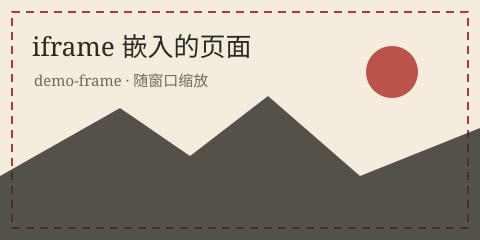

样式写不好，多半不是属性背得少，而是没有精确选中那个元素。 这一式把 CSS 的选择器摊成一张表：见过的、没见过的都在这儿，方便你以后回来查。
- 掌握基础选择器与四种组合器：空格、
>、+、~ - 会用属性选择器按“属性长什么样”挑元素
- 认得状态伪类与结构伪类，会用
:nth-child()做斑马纹 - 会用
:not()/:is()/:where()/:has()写出更短更清楚的规则 - 会用
::before/::after等伪元素“加内容”，并算得清选择器优先级
基础选择器与组合器
单个选择器只能定位到“某一类元素”，组合器则描述元素之间的关系。 四种组合器是这一式的重头戏：
| 写法 | 名字 | 含义 | 选中示例 |
|---|---|---|---|
ul li |
后代选择器（空格） | 在 ul 里面的任意层级 |
列表里所有 li，包括嵌套的 |
ul > li |
子代选择器（>） |
只算直接子元素，隔一层不算 | 只选最外层的 li |
h2 + p |
相邻兄弟（+） |
紧跟在 h2 后面的那一个兄弟 |
标题正下方的那段文字 |
h2 ~ p |
通用兄弟（~） |
h2 之后所有同级兄弟 |
标题之后直到结尾的每个段落 |
另外三个基础零件：* 是通配符（选中所有元素，常用于清样式）；
.note 是类选择器；#top 是 ID 选择器。
把多个选择器用逗号连起来就是“分组”，一组成员共享同一份声明：
h1, h2, h3 { margin-bottom: .6rem }。
- 外层第一项
- 外层第二项
- 内层第一项
- 内层第二项
段落 A（它后面还有两个兄弟）
段落 B（紧挨着 A，所以颜色变了）
段落 C（不是紧挨着的，但属于“A 之后的兄弟”）
数一数就明白：四个 li 都有蓝线（后代），但只有两个外层 li 有灰底（子代）；
段落 B 变红（相邻），B 和 C 都有虚线（通用兄弟）。
“空格隔开一层层、> 只认亲儿子”——这两句记住，嵌套布局就少一半困惑。
属性选择器：按“长相”挑元素
当 class 不够用时，可以按属性的存在或内容来挑：
| 写法 | 含义 | 典型用途 |
|---|---|---|
[disabled] | 有这个属性 | 所有被禁用的控件 |
[type="email"] | 属性值完全等于 | 只挑邮箱输入框 |
[class~="tag"] | 空格分隔的列表中包含该词 | 等价于 .tag，但更啰嗦 |
[lang|="zh"] | 等于该值或以“该值-”开头 | 所有中文内容（zh、zh-CN） |
[href^="https://"] | 以某段文字开头 | 给站外链接加个小标记 |
[href$=".pdf"] | 以某段文字结尾 | 给 PDF 链接换图标 |
[href*="mdn"] | 包含某段文字 | 粗筛；过宽时容易误伤 |
[data-state="done" i] | 末尾的 i 表示忽略大小写 | DONE、Done 都算命中 |
演示里那条 [href^="https://"] 是十分常用的套路：一次写出“所有站外链接”，
不必给每个链接手动加类名。注意最后那条 [data-state="doing"] 用到了
::before 加符号，伪元素马上就会讲到。
伪类（一）：状态与顺序
伪类以冒号开头，用来描述元素的状态或位置—— 它们不写在 HTML 里，而是由浏览器实时判断。常用的状态伪类：
| 伪类 | 何时命中 | 提醒 |
|---|---|---|
:hover | 鼠标悬停 | 触屏设备上可能永远不触发，别把关键操作只放在悬停里 |
:focus | 获得焦点（点击或 Tab） | 会被鼠标点击也触发 |
:focus-visible | 键盘聚焦才显示 | 给键盘用户画焦点圈的首选（第十一式） |
:active | 正在被按下的一瞬间 | 常用来做“按下去”的反馈 |
:link / :visited | 未访问 / 已访问的链接 | :visited 出于隐私只能改少量颜色类属性 |
:checked | 单选框、复选框被选中 | 配合 + label 能做纯 CSS 的自定义开关 |
:disabled / :enabled | 禁用 / 可用 | 禁用态别忘了把对比度也调淡，别只变灰 |
:required / :optional | 必填 / 选填 | 可用来给必填项加星号提示 |
:valid / :invalid | 校验通过 / 不通过 | 注意“一上来就满脸通红”的坑（第八式） |
:placeholder-shown | 输入框正显示 placeholder | 可以判断“还空着”，做浮动标签 |
:root | 文档根元素（即 html） | 定义 CSS 变量的常用位置（第二十五式） |
:target | 网址 #hash 指到它 | 做“跳到哪一节就高亮哪一节” |
还有一组专门按“位置”挑人的结构伪类，做清单与表格时非常好用：
| 伪类 | 含义 |
|---|---|
:first-child / :last-child | 是父元素的第一 / 最后一个子元素 |
:nth-child(3) | 第 3 个子元素（注意：按“第几个孩子”数，不管类型） |
:nth-child(2n) / :nth-child(odd) | 偶数 / 奇数项，斑马纹标配 |
:nth-of-type(2) | 同类型元素里的第 2 个（p 只跟 p 数） |
:only-child | 是父元素唯一的孩子 |
:empty | 里面什么都没有（连空白文字都没有） |
nth-child 里的公式可以带字母：2n+1 是奇数项，
-n+3 是“前三个”，3n 是每三个一组。
另外它还支持 :nth-child(2 of .done) 这种“只在符合条件的元素里数”的写法。
| 日期 | 功课 | 用时 |
|---|---|---|
| 9 月 12 日 | 抄写骨架 | 30 分钟 |
| 9 月 13 日 | 拆解网页 | 45 分钟 |
| 9 月 14 日 | 列表与链接 | 40 分钟 |
| 9 月 15 日 | 表单练习 | 50 分钟 |
三个选择器做了三件事：:nth-child(odd) 给奇数行铺底色，
:first-child 让第一行变红，:last-child 给最后一行加粗底线。
一行脚本都没写，表格已经“活”了——这就是伪类的价值。
伪类（二）：:not、:is、:where、:has
这四个是现代 CSS 的“逻辑运算”，能把又长又闷的选择器变短：
| 写法 | 含义 | 例 |
|---|---|---|
:not(…) |
排除括号里的条件（可以写多个） | li:not(.done)：除“已完成”之外的所有项 |
:is(…) |
满足括号里任意一个选择器 | article :is(h2, h3)：文章里的二级与三级标题 |
:where(…) |
同 :is()，但优先级为 0 |
写基础样式、又不希望盖掉别人的时候最好用 |
:has(…) |
自身含有括号里的东西（“父选择器”） | .card:has(img)：所有含图片的卡片 |
- 抄写页面骨架
- 拆解一个网页
- 列表与链接
- 写自己的主页
带图的卡片
它里面有 img，所以被 :has(img) 抓到了。

没图的卡片
它没有图片，因此边框保持默认的浅色。
注意最后两条规则的顺序：.card 的边框写在后面，
但因为 :has() 那条的优先级更高（多了伪类与元素），
带图卡片的边框依然是朱砂色。这正是下面要说的重点。
伪元素：凭空造出一小块内容
伪元素用两个冒号（旧写法一个冒号也能用，规范建议两个）， 它能选中“元素的某一部分”或凭空插入内容：
| 伪元素 | 作用 | 提醒 |
|---|---|---|
::before / ::after | 在内容前后插入装饰或文字 | 必须写 content 才出现；内容不建议放重要信息（读屏可能读不到） |
::first-line | 段落第一行 | 只能改字体、颜色等少数属性 |
::first-letter | 第一个字（首字下沉） | 只对块级容器生效 |
::marker | 列表项的符号 / 编号 | 能改颜色、字号与 content |
::selection | 被鼠标选中的文字 | 只能改颜色与背景色 |
::placeholder | 输入框的占位文字 | 别把对比度调太低，会看不清 |
日拱一卒，功不唐捐。这句话的第一个字被 ::first-letter 放大了，用来做“首字下沉”的版式。
- 写骨架
- 填内容
- 穿衣裳
- 苹果
- 橘子
用鼠标选中这一行文字，会看到 ::selection 定下的朱砂底色。
演示里的“第 N 步”由 counter（计数器）自动生成：
counter-reset 开账、counter-increment 加一、
content 里用 counter() 取号。想给列表换符号，
优先用 ::marker 的 content，比“去掉圆点再插伪元素”更干净。
优先级：谁说了算
同一个元素被多条规则命中时，浏览器按一套“分量”规则裁决。可以把它想象成四位的计分板：
| 分量 | 谁贡献 | 例子 |
|---|---|---|
| 千位 | 行内样式 | style="color: red" |
| 百位 | ID 选择器 | #top |
| 十位 | 类、属性选择器、伪类 | .note、[type="email"]、:hover |
| 个位 | 元素、伪元素 | p、::before |
比较时从左往右看：百位大的赢，百位相同比十位，以此类推；四位完全相同， 后写的赢（这就是“层叠”的字面意思）。三条细节特别值得记：
- 通配符
*、组合器（空格、>、+、~）不计分； :where(…)的部分计 0 分——它天生“谦让”，适合做基础样式；:is()、:not()、:has()的分数取 括号里最高的那个，例如:is(#top, p)算 ID 的分量。
样式打架时，新手爱用 !important 或一层层加 ID 硬压；
那会让下一次修改更难受。更好的做法是：用类名把规则说清楚、
保持权重低而一致，实在需要覆盖时再考虑
:where() 降低自己的分量（第十五式会讲 !important 的正确用法）。
本式小结
- 基础选择器：元素、类
.x、ID#x、通配*、分组用逗号； - 组合器四兄弟：空格（后代）、
>（子）、+（相邻兄弟）、~（通用兄弟）； - 属性选择器按“有没有 / 等于 / 开头 / 结尾 / 包含”挑元素，尾部加
i可忽略大小写； - 状态伪类管交互（
:hover、:focus-visible、:checked…）， 结构伪类管位置（:nth-child()、:first-child…）； :not()排除、:is()取并集、:where()零权重、:has()看“有没有”；- 伪元素用两个冒号，
::before/::after记得写content； - 优先级四位计分板：行内 > ID > 类/属性/伪类 > 元素/伪元素，同分后写者赢。
- 给定一个列表，用
:not()与:nth-child()写出规则： 偶数项淡底、除最后一项外都有下边框。 - 给第十二式主页的“作品”卡片加两条规则：
含图片的卡片（
:has(img)）加一圈边框；除第一张外的卡片加一点上边距。 - 思考：
:where()把优先级降到 0，这在实际项目里能解决什么问题？
参考答案 1
要点：nth-child(even) 与 2n 等价；
:not(:last-child) 比“给所有项加边框、再单独去掉最后一项”更省事，
也不会在最后一行留下一根多余的线。
参考答案 2
:has() 让“父元素按子元素断言自己”成为可能——过去这类需求只能靠脚本加类名。
现在主流浏览器都已支持，可以放心使用。
参考答案 3
它解决“基础样式不小心赢了别人”的问题。典型场景：你写了一套通用组件样式
（比如 .btn { padding: .4rem .9rem }），后来又要在某个页面里写
.toolbar button { padding: .2rem .5rem } 微调；
权重比较的麻烦就来了。若基础样式用
:where(.btn) 包裹，它的分量降为 0——
页面里的任何规则都能轻松覆盖它，而不必动用 !important 或加 ID。
把“可以被覆盖”设计进基础样式，是成熟写法的标志。
下一式，把“谁说了算”这件事彻底讲清：层叠、继承与优先级。